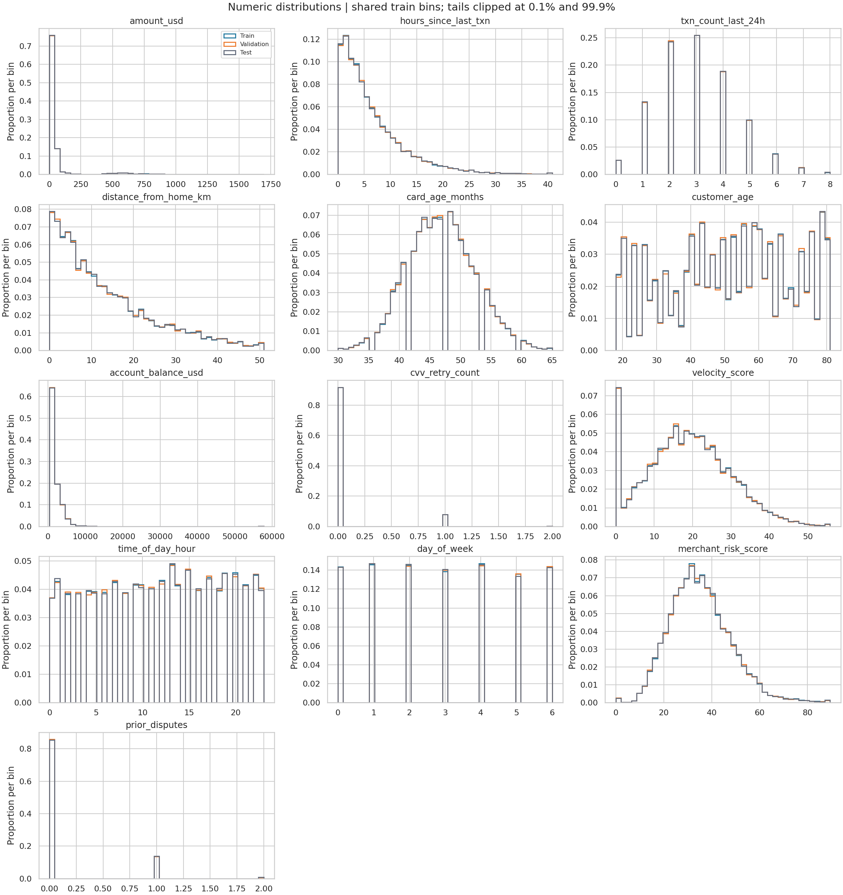
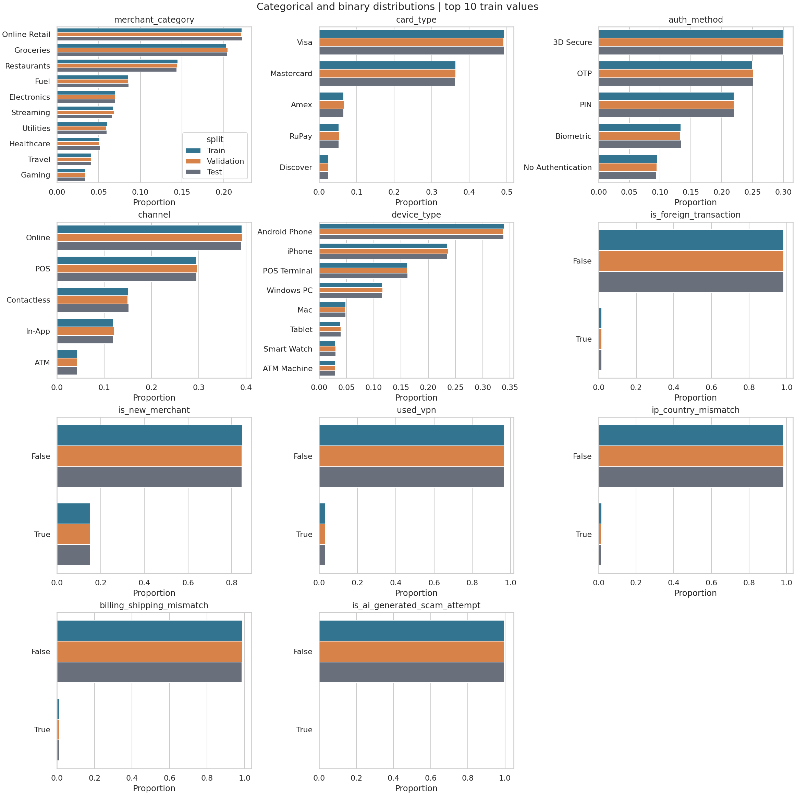
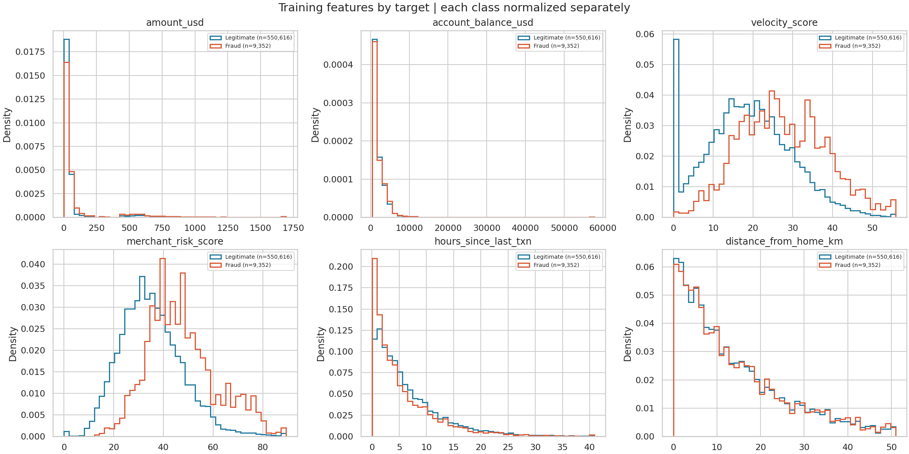
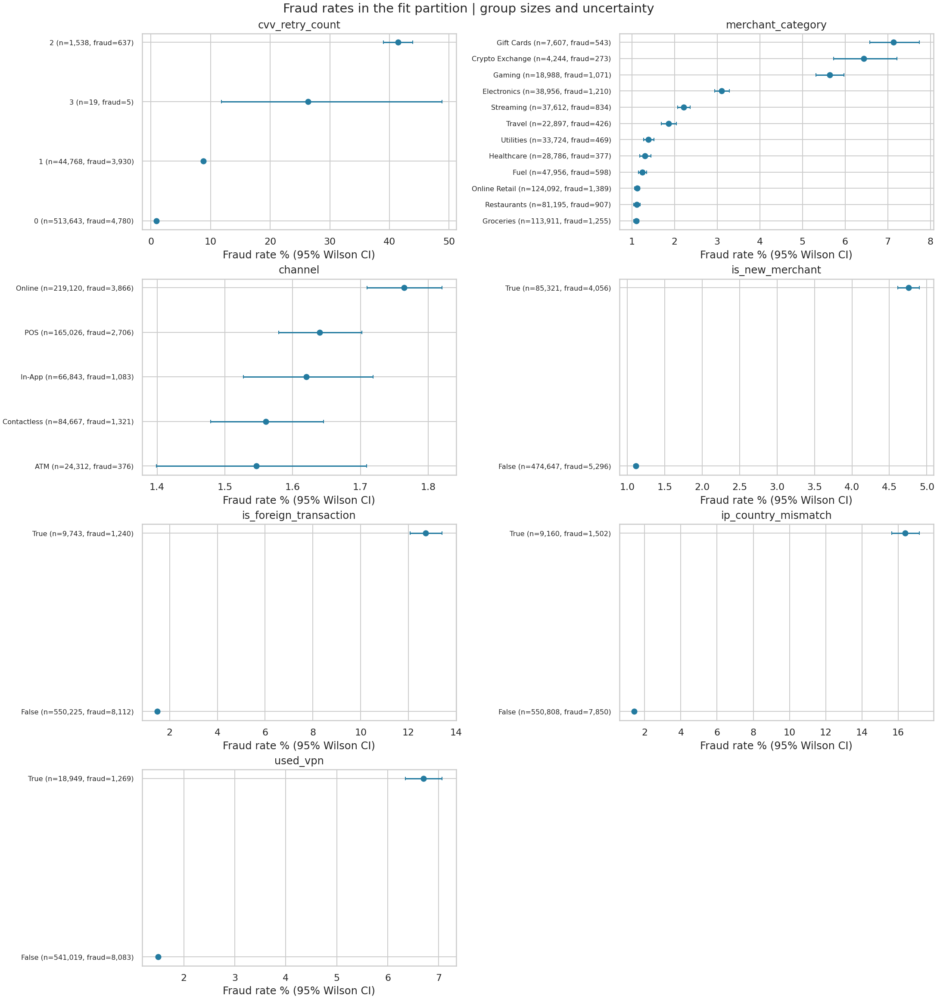
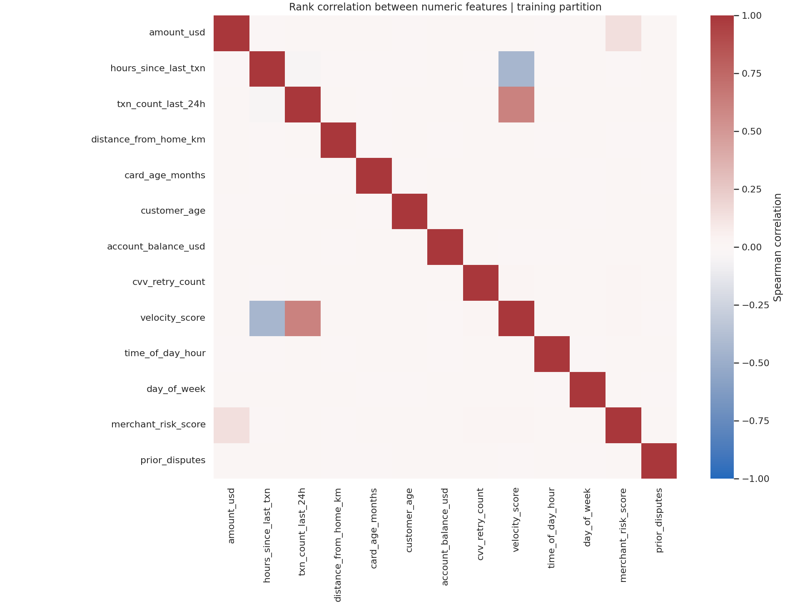
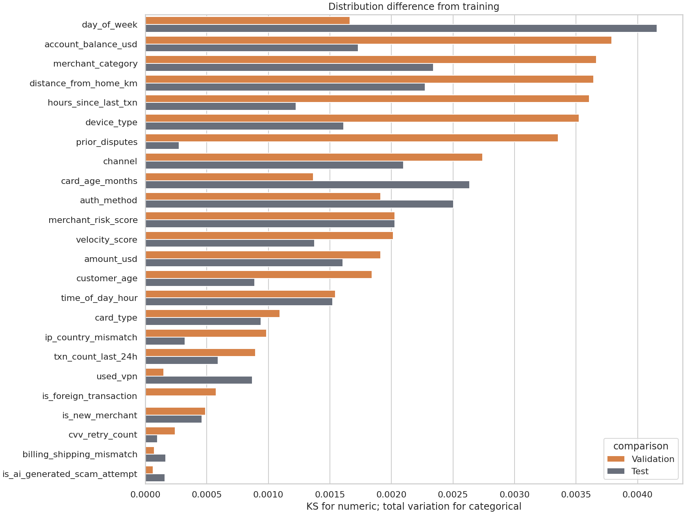
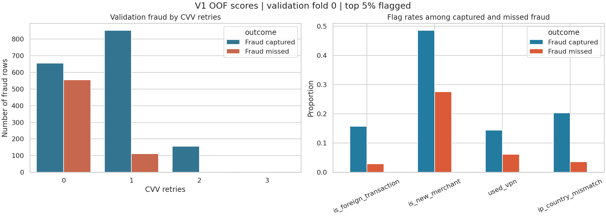

Competition Playground S6E11 · Full train 699.960 dòng · StratifiedKFold seed 42
| split | rows | columns | missing_cells | duplicate_feature_rows | id_min | id_max | fraud_count | fraud_rate |
|---|---|---|---|---|---|---|---|---|
| Train | 559968 | 26 | 0 | 0 | 1 | 699958 | 9352.0 | 0.016701 |
| Validation | 139992 | 26 | 0 | 0 | 0 | 699959 | 2337.0 | 0.016694 |
| Test | 299984 | 25 | 0 | 0 | 699960 | 999943 | — | — |
Tệp thống kê: split_summary.csv · feature_profile.csv · distribution_effects.csv · fraud_rates.csv
Validation là fold 0 của StratifiedKFold 5 fold seed 42 trên train.csv. Train là 4 fold còn lại. Test là toàn bộ test.csv, không có nhãn. Validation này đã tham gia các phân tích trước và không là holdout mới độc lập.

Histogram dùng cùng cạnh bin của train, mỗi tập được chuẩn hóa theo số dòng. Đuôi ngoài phân vị 0,1%–99,9% được gộp tại hai mép. Xem feature_profile.csv để đọc min, max và các phân vị đầy đủ.

Biểu đồ thể hiện tỷ lệ theo từng tập. Các bảng feature_profile.csv và distribution_effects.csv chứa toàn bộ biến.

Mỗi lớp được chuẩn hóa riêng để so sánh hình dạng. Điều này không thể hiện tỷ lệ fraud thực tế.

Điểm là tỷ lệ fraud trên tập train, thanh ngang là khoảng tin cậy Wilson 95%, nhãn kèm số dòng và số fraud.

Tương quan Spearman của các biến số trên train. Tương quan không chứng minh quan hệ nhân quả.

Phân tích top 5% theo dự đoán OOF của v1 trên fold validation, kèm số lượng và tỷ lệ thực tế.
| outcome | rows |
|---|---|
| Fraud captured | 1669 |
| Fraud missed | 668 |
| Legitimate below top 5% | 132325 |
| Legitimate flagged | 5330 |
